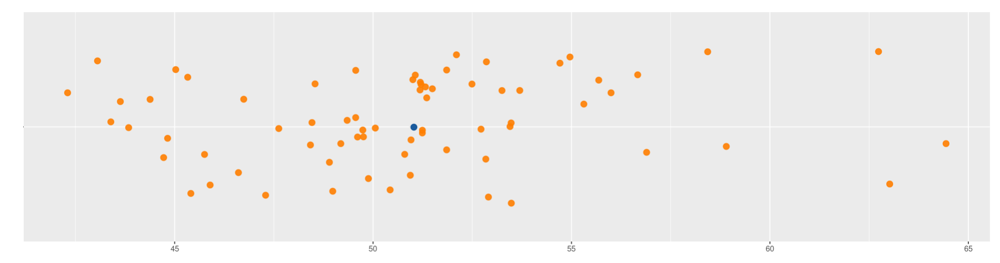

Indicadores de tendencias central
Nivelatorio de Estadística
2022

Uno de los principales retos en el análisis de datos consiste en resumir una información en unos pocos indicadores que los representen. Los indicadores de tendencia centro o de centro resumen en un número los datos. Dentro de ellos se destancan:
- Media
- Mediana
- Moda
- Rango medio
- Media truncada
Media aritmética
Es el indicador de tendencia central más conocido y utilizado por si fácil intepretación y calculo. Consiste en sumar todos los valores de un conjunto de datos y dividirlos por el número de datos
\[\bar{x}= \frac{1}{n} \sum_{i=1}^{n}
x_{i}\]
Sus principales propiedades son:
La suma de las desviaciones de los datos con respecto a la media es cero. \(\sum (x_{i}-\bar{x})=0\).
La suma de los cuadrados de las desviaciones de los datos con respecto a un valor \(a\) es mínimo cuando \(a=\bar{x}\).
Si \(x_{i}=k\) para todo \(i\), entonces, \(\bar{x}=k\).
Si todos los datos de una variable se multiplican por una constante \(k\), es decir \(y_{i}=kx_{i}\), entonces \(\bar{y}=k\bar{x}\)
Si \(z_{i}=a x_{i}+b y_{i}\), donde: a, b constantes y \(x_{i}\), \(y_{i}\) variables, entonces: \(\bar{z}=a\bar{x}+b\bar{y}\).

Para el ejemplo simulado corresponde a 50.80 . En R se utuliza la
función mean(x)
La media tiene un problema en presencia de datos atípicos y cuando los datos tienen formas asimétricas. Estos problemas los resuelve de manera robusta el siguiente indicador
Mediana
Me :Es el número que divide la muestra en dos partes
de igual proporción (50% : 50%). Es decir que corresponde al \(P_{50}\) = \(D_{5}\) = \(Q_{2}\), revisado en los indicadores de
posición e igual a 50.98. En R se utiliza la función
median(x)
Moda
Para las variables cuantitativas se utiliza como indicador de centro la MODA, la cual corresponde al valor que más se repite o que mayor frecuencia tienen. Para encontrarla se construye una tabla de frecuencias
Media truncada
Con el fin de evitar que los datos atípicos generen sesgos en el indicador de la media, es posible separar un gran porcentaje central de datos y cortar los datos de los extremos. Por ejemplo podemos truncar el 10% de los datos (5% a cada lado ) dejando un 90%. A este indicador de le llama media truncada al 10% (\(\bar{x}_{_{0.10}}\))
Para el ejemplo simulado el valor de la media truncada corresponde a
50.53, calculado utilizando la función :
mean(x, na.rm = TRUE, trim = 0.10)
Rango medio
El rango medio es un indicador fácil de calcular y muy practico para estimaciones rápidas. Para ello debemos conocer los valores mínomos y máximos de los datos, sumarlos y dividir el resultado por dos
\[\frac{1}{2}\Big(max(x)+min(x)\Big)\] Para
caluclarlo se puede puede construir la siguiente funcion en R :
(max(x ,na.rm = TRUE) + min(x,na.rm = TRUE))/2, la cual
arroja un valor de 53.37 para los datos simulados
Códigos R
x=c(51.35, 49.88, 49.35, 51.21, 51.24, 45.75, 48.42, 47.29, 48.98, 50.06, 50.94, 45.41, 55.69, 48.90, 56.00, 44.72, 56.89, 46.61, 53.25, 48.46, 49.74, 45.03, 63.02, 50.96, 50.43, 51.19, 53.45, 52.10, 49.61, 45.89, 49.76, 42.30, 53.48, 54.71, 53.48, 56.67, 44.38, 51.18, 51.06, 54.96, 64.44, 51.85, 45.33, 62.74, 43.84, 51.32, 53.70, 51.00, 52.86, 43.06, 43.63, 51.24, 52.84, 49.19, 49.56, 49.56, 51.49, 55.31, 46.74, 47.62, 51.85, 58.90, 50.80, 43.39, 48.54, 52.72, 44.82, 52.49, 58.43, 52.91)
mean(x) # media
median(x) # mediana
mean(x, na.rm = TRUE, trim = 0.10) # media truncada al 10%
(max(x ,na.rm = TRUE) + min(x,na.rm = TRUE))/2 # rango medio